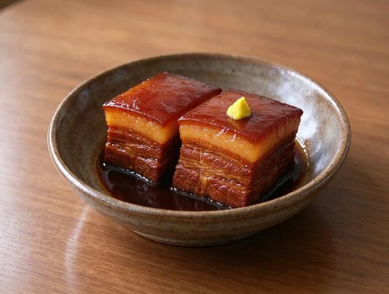

ちゃんと「いただく」方法
豚の角煮、からし添え

材料（2人分）
- 豚ばら塊350g
- しょうが薄切り3枚
- 酒50mL
- しょうゆ大さじ2
- 砂糖大さじ1と1/2
- 練りがらし少々
作り方
- 肉を4cm角に切って鍋で全面を焼き、出てきた脂をふく。
- 肉がかぶる量の水としょうがを加え、弱火で約1時間煮る。途中で湯を足し、肉が煮汁から出ないようにする。
- ゆで汁200mLを残して酒と調味料を加える。落としぶたをしてさらに約30分、箸でほぐれるまで煮て、からしを添える。
肉の火の通りは中心温度計で確かめます。最も厚いところの中心が75℃に達してから、1分以上加熱してください。